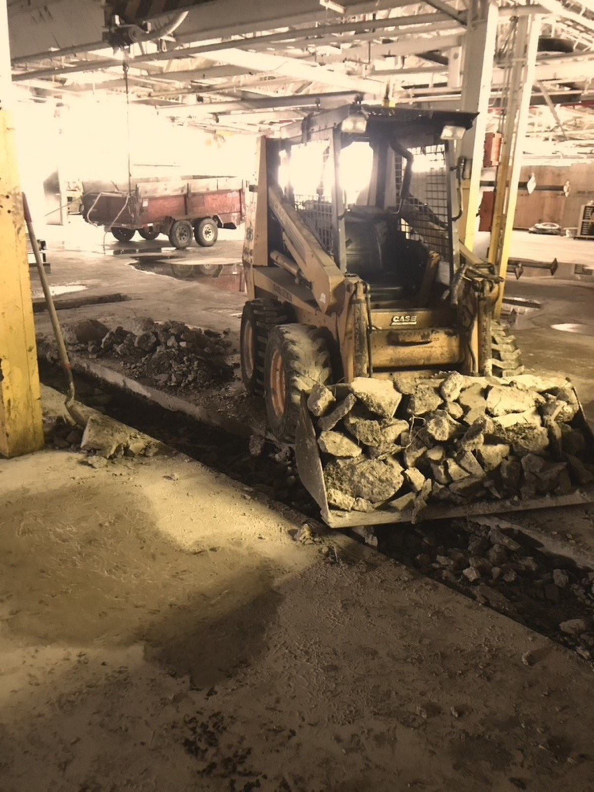
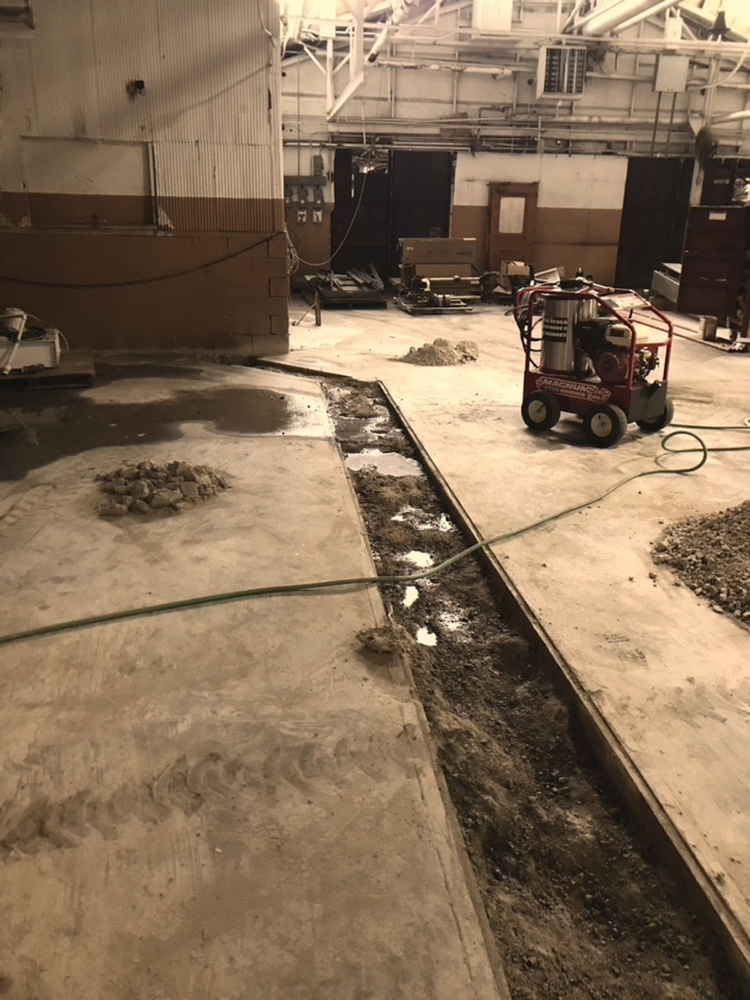
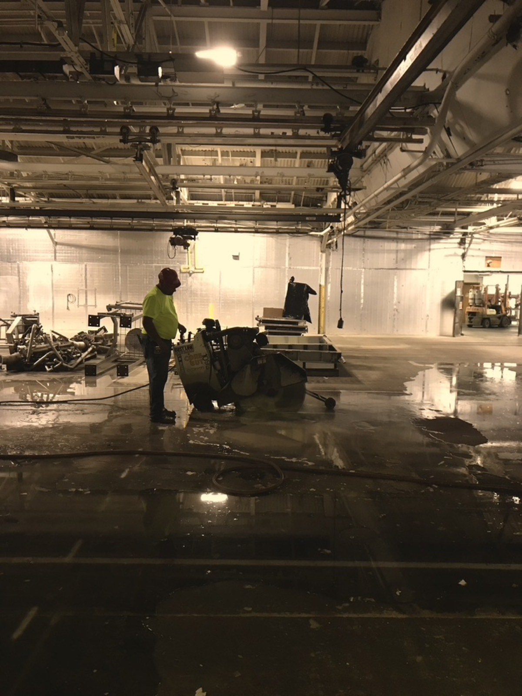

The construction process was daunting, but after working in wineries throughout the Finger Lakes and building Empire Cider Co. from the ground up, I knew what I wanted, and more importantly, what I needed. Floor drains were first on the list. Not glamorous, but essential to production.
We constructed, and by "we," I mean the fantastic, talented tradesmen who worked alongside me for almost two years building Titan Hollow. Most days they thought I was crazy. (Now they know I am.) But they always showed up at the Hollow with a smile, telling me this was their favorite project they were working on.

So, back to the drains. We cut a floor trench, and I'll admit, one of my favorite pastimes is watching men work, especially with powerful equipment. They jackhammered through a hundred years of concrete and poured new forms so water would slowly drain from one end of production to the other. Mustang Fabrication built the trench covers: steel plates strong enough to hold up to forklifts, with our Mad McIntosh logo cut right into the metal on a CNC machine.
Floor drains might seem like a small thing to anyone outside the trade, but in the art of fermentation, ninety percent of the work is cleaning, something I didn't fully appreciate until my education in viticulture and wine technology in the Finger Lakes. Being able to hose everything down and squeegee it toward a single trench running the length of production isn't a luxury. It's a necessity.


Walls went up. Multiple types of power went in. We built a removable wall, too, knowing that down the road we'd want to expand into winemaking and would need room for more tanks.
Local partners we love. Make a day of it in Happy Valley.